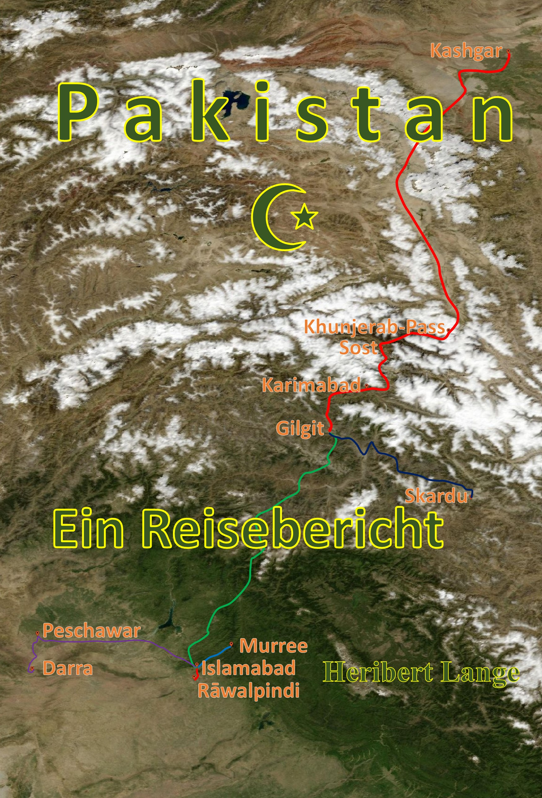

Autor · Berlin · Deutschland

Dieses Buch ist kein klassischer Reiseführer, kein Abenteuerroman und auch kein politischer Bericht. Es ist vielmehr ein ehrlicher, persönlicher Reisebericht, eine Momentaufnahme einer Reise durch Pakistan im Jahr 1993, die voller Überraschungen, Herausforderungen und Begegnungen war.
Warum ich diese Reise unternommen habe? Ganz einfach: Mein Freund Walter sagte damals zu uns: „Unterkunft und Verpflegung sind da, und ein Fahrer steht bereit, um Land und Leute zu erkunden." Diese Einladung ging an 21 Freunde, und ich bin froh, dass nur wir beide den Mut hatten, sie anzunehmen. Sicherlich wären nicht alle 21 wieder nach Hause gekommen.
Außerdem war es meine Aufgabe, eine Dokumentation über einen Workshop zu erstellen, der sich leider aufgrund der Umstände vor Ort in Luft aufgelöst hat.
Auf den folgenden Seiten nehme ich Sie mit zu Orten, die kaum ein Tourist betritt, zu Menschen, die mit ihrem Alltag zwischen Tradition und Wandel kämpfen, und zu Momenten, die mir tief ins Herz gegangen sind.
Dieses Buch ist eine Einladung, mit offenen Augen und offenem Herzen auf Reisen zu gehen, nicht nur in ferne Länder, sondern auch in die Tiefe der eigenen Erfahrungen.
Ich hoffe, es berührt Sie und regt zum Nachdenken an, genauso wie es mich verändert hat.
← Zurück ⌂ Zur Hauptseite